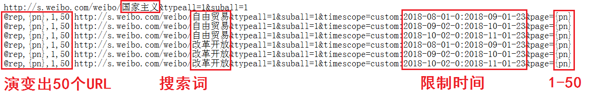

定义程序的运行，包括启动方式、运行需要的种子URL等参数
点击
增加任务
按钮，弹出
选择程序
对话框
点击
程序
下拉选择框，选择新浪微博列表
点击
确定
按钮，弹出
增加任务
对话框
输入任务名称：新浪微博列表
点击
运行类型
下拉选择框，选择手动运行
输入登录种子URL：http://weibo.com/
点击
文件
按钮，弹出本地文件选择对话框，选择采集数据种子ULR文件
选择的文件内容必须是 ANSI 编码格式的
选择的文件内容为新浪微博关键词搜索URL，每一行为一个种子URL，比如：

第1行采集
国家主义
第1页列表数据
后面6行采集
自由贸易
和
改革开放
在2018年8-10月的微博
使用 rep 指令达到翻页目标，加上时间分解，能够极大地提高采集量
输入登录账号和密码，逗号分隔
如果有多个账户，可以写入本地文件，点击
文件
按钮选择该文件
选择的文件内容必须是 ANSI 编码格式的
多个账户轮流使用，能够缓解验证码的频繁出现
点击
确定
按钮提交